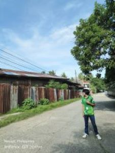

All About Myself
"Ronald REOJA i am 20 year old Second-year Bachelor Of Information Technology (BSIT) at Saint Michael College of Caraga. Originally from P-4, Brgy. CAHAYAGAN, Carmen, Agusan Del Norte,RONALD is Commited to Build a Future in the Computer world. This Stage of Life not only a commitment to learning but also the adaptability and resilence required to succeed in a changing environtment. "
My life Story
"My Team is Bikers Complte all couple Cycling Shirt For ready to go Long Rides ""
hiking, camping, mountaineering, cycling, dog walking, canoeing, caving, kayaking, rafting, rock climbing, running, sailing, skiing, sky diving and surfing.

"My life became a journey of growth and obstacles as a college student studying information technology (BSIT)"